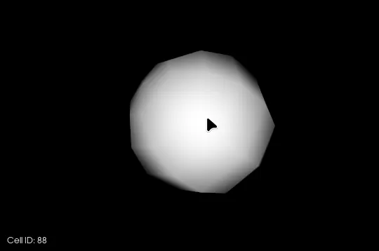
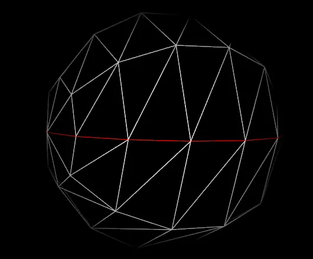
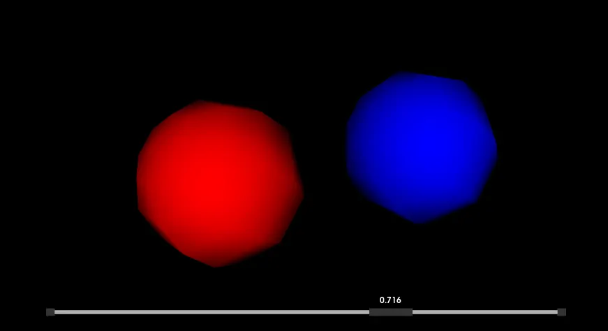

By combining low-level access to rendering primitives with high-level interactor and widget frameworks, VTK enables you to build applications where users can drill into complex datasets, modify display parameters in real time, and receive immediate visual feedback. These capabilities not only enhance user engagement but also accelerate the discovery of patterns and anomalies that might otherwise remain hidden in static views.
The real reason interactivity matters is that it turns visualization from “presentation” into “investigation.” When users can poke, slice, select, and tweak parameters instantly, they stop guessing and start testing hypotheses. That’s when VTK becomes more than a renderer—it becomes a lab bench for your data.
A practical do/don’t mindset for this entire section:
Picking is the mechanism by which you map a screen-space event—such as a mouse click or drag—back to an element in your 3D scene, be it a point, cell, actor, or even a rendering layer. Selection builds upon picking by allowing you to extract or highlight subsets of data based on those picks or on more abstract criteria (e.g., cells whose scalar values fall within a given range). This dual capability gives users both precision ("Which vertex did I click?") and breadth ("Show me all cells above threshold X").
This is one of the fastest ways to make a visualization feel “alive.” The moment a user clicks and the system answers back—by printing an ID, highlighting a region, or showing a tooltip—you’ve created trust: the visuals are connected to real data, not just pretty geometry. Picking and selection also set you up for workflows like “click to inspect,” “click to isolate,” and “click to measure,” which are staples in professional visualization tools.
VTK provides multiple picker classes to suit different needs:
vtkCellPicker: Targets individual cells or points by casting a ray from the view plane into the scene and returning the closest intersected cell or point.vtkWorldPointPicker: Computes the world coordinates corresponding to a screen-space location, without necessarily snapping to the geometry.vtkExtractSelection: Operates on the output of a picker (or other selection sources) to generate a new vtkDataSet consisting only of the selected elements.One small but important “do/don’t” here:
For example, to pick and report the ID of a cell under the cursor:
picker = vtk.vtkCellPicker()
picker.SetTolerance(0.0005) # Tighten or loosen as needed
display_x, display_y = interactor.GetEventPosition()
picker.Pick(display_x, display_y, 0, renderer)
picked_cell_id = picker.GetCellId()
print(f"User picked cell ID: {picked_cell_id}")
After picking, you can feed the result into a pipeline filter like vtkExtractSelection to visually outline the selection, compute statistics on the chosen subset, or export it for further analysis. By tuning the picker tolerance and combining multiple pick events, you can implement lasso-style or multi-object selection strategies that feel intuitive to end users.
A useful way to keep selection “fun” instead of frustrating is to give clear feedback:
Cutting planes allow users to slice through volumetric or surface datasets interactively, revealing internal features that would otherwise be occluded. By defining a geometric plane and intersecting it with your dataset, you can generate cross-sectional contours, expose hidden structures, and better understand spatial relationships. This technique is invaluable in fields like medical imaging (to inspect anatomical slices) and computational fluid dynamics (to examine interior flow patterns).
The “why” is very human: people understand complex 3D structure better when they can “peel it open.” Rotating a volume helps, but slicing it gives you certainty—what’s inside, where boundaries really are, and how layers relate. Cutting planes also help users stay oriented because the slice itself becomes a landmark they can move deliberately.
Classes in this workflow include:
vtkPlane: Encapsulates the geometric definition of a plane via an origin point and a normal vector.vtkCutter (or alternatively vtkClipFilter for retaining one side): Accepts the plane as a cut function and computes the intersection of the plane with any input geometry.Example of constructing a simple planar cut:
plane = vtk.vtkPlane()
plane.SetOrigin(0, 0, 0)
plane.SetNormal(1, 0, 0) # Slice along the X-axis
cutter = vtk.vtkCutter()
cutter.SetCutFunction(plane)
cutter.SetInputData(yourPolyData) # Could be a mesh or volumetric slice
cutter.Update()
sliced_output = cutter.GetOutput()
Once you have the sliced geometry, you can map it to a vtkPolyDataMapper and apply custom coloring or contouring to highlight features of interest. By placing callbacks on widget interactions (see below), you can let users drag the plane through space and watch the internal view update in real time.
A do/don’t that helps performance and clarity:
vtkCutter) or a kept/removed side (vtkClip* family).VTK 3D widgets are self-contained interactive objects that encapsulate both representation (how they look) and behavior (how they respond to user actions). Unlike generic actors, widgets maintain their own event handling and state, making it straightforward to build UI controls directly into the 3D scene. Common use cases include manipulating clipping planes, adjusting lighting directions, or tuning scalar thresholds.
Widgets are where your visualization starts feeling like a real application. Instead of asking users to type numbers or dig through menus, you give them direct manipulation: drag the plane, stretch the box, slide the value. That’s why widgets are often the quickest path to “wow, this is usable.”
Popular widget classes include:
vtkBoxWidget: Offers a resizable, draggable bounding box. Useful for region-of-interest selection or aligning data.vtkPlaneWidget: Displays a plane that users can rotate, translate, and scale to define cutting or clipping surfaces.vtkSliderWidget: Renders a 2D slider in the 3D view for continuous parameter adjustment (e.g., opacity, isovalue, time steps).A basic slider setup might look like this:
# Assume sliderRep is a vtkSliderRepresentation2D configured with a range and position
sliderWidget = vtk.vtkSliderWidget()
sliderWidget.SetInteractor(interactor)
sliderWidget.SetRepresentation(sliderRep)
sliderWidget.AddObserver(
"InteractionEvent",
lambda obj, evt: actor.GetProperty().SetOpacity(
obj.GetRepresentation().GetValue()
)
)
sliderWidget.EnabledOn()
Because each widget handles its own rendering and event loop, you can mix multiple widget types in a single scene without complex interdependencies. This modularity makes it easy to extend or customize widgets—for instance, by subclassing vtkAbstractWidget or swapping out handle representations for a different look.
A small UX tip that makes widgets feel professional:
At the core of VTK’s interactivity is its event-driven architecture, where user inputs and render events generate notifications that you can intercept with callbacks. This model decouples application logic from the rendering loop, so you can inject your own code—whether to modify the camera, update data, or trigger external processes—whenever a specific event occurs.
The big advantage of event-driven design is that it scales with complexity. You can start with “print coordinates on click,” then evolve toward “pick a cell, extract it, update statistics panel, and highlight the selection”—all without turning your render loop into an unreadable monolith.
Classes include:
vtkRenderWindowInteractor: Orchestrates the capture of mouse, keyboard, and timer events, dispatching them to registered observers.vtkCallbackCommand: Binds a user-supplied function (the callback) to a particular event identifier (e.g., LeftButtonPressEvent).A key do/don’t for stability:
MouseMoveEvent) unless you throttle or optimize, or your UI will stutter.Mouse events are central to navigation and selection in 3D scenes. The interactor translates low-level OS events into high-level VTK events (e.g., LeftButtonPressEvent, MouseMoveEvent). By adding observers on these events, you can implement custom behaviors such as drag‐to‐rotate, point annotation, or dynamic slicing. Interactor styles like vtkInteractorStyleTrackballCamera provide built-in camera controls, but you can layer additional observers for tasks like picking or drawing overlays:
def onMouseClick(obj, event):
display_x, display_y = obj.GetEventPosition()
print(f"Mouse clicked at display coords: ({display_x}, {display_y})")
style = vtk.vtkInteractorStyleTrackballCamera()
style.AddObserver("LeftButtonPressEvent", onMouseClick)
interactor = vtk.vtkRenderWindowInteractor()
interactor.SetInteractorStyle(style)By converting screen‐space coordinates back to world‐space using pickers or camera transforms, you can precisely map mouse events to data points or geometry.
A practical “feel good” improvement many apps use:
MouseMoveEvent without guarding it (e.g., only act when a button is pressed, or sample every N milliseconds).Keyboard events let you offer shortcuts for common operations—toggling visibility, stepping through time series, adjusting scalar thresholds, or switching interaction modes. VTK generates KeyPressEvent and KeyReleaseEvent, reporting the symbolic name of the key pressed. You can bind callbacks to these events to streamline workflows:
def onKeyPress(obj, event):
key = obj.GetKeySym()
if key == 'w':
actor.GetProperty().SetRepresentationToWireframe()
elif key == 's':
actor.GetProperty().SetRepresentationToSurface()
print(f"Key pressed: {key}")
style.AddObserver("KeyPressEvent", onKeyPress)Because you can add multiple observers to the same event, you can maintain a clear separation of concerns: one callback for camera reset, another for data export, and yet another for UI state changes, all coexisting without interference.